In 1878, a legendary rivalry was born. Red and blue blood mixed when rival schools Phillips Academy Andover and Phillips Exeter Academy battled on the football field for ultimate glory. Contrary to popular belief, this was not the first time that Andover and Exeter had faced off in athletics. In May of the same year, Andover met Exeter on the baseball field, only to suffer a tough 11-1 loss against its opponents in red.
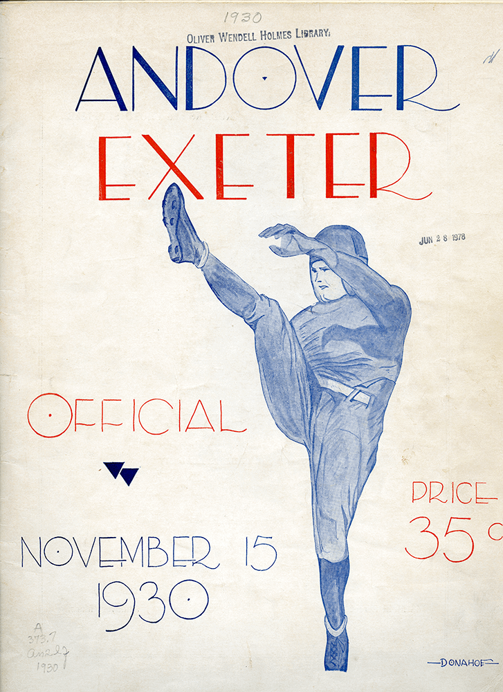
Courtesy of the Phillips Academy Archives.Program cover from the 1930 A/E Weekend.
Six months later, on a chilly Sunday afternoon, “the Andover eleven” braved weather that “threatened rain” and secured its revenge with a crushing 22-0 victory on the gridiron. This game set the tone for the following 138 years of interscholastic competition.
According to The Phillipian’s coverage of the game, “Every Phillipian was jubilant over the well-earned victory of our eleven in the game with Exeter.” Spectators expressed their jubilance with “frequent applause” – the equivalent of the rowdy cheers of today.
The competition that took place in 1878, however, was only an extension of a familial rivalry that had begun one hundred years before with the founding of Andover. As of this year, Andover has totaled 72 victories over Exeter, which has claimed only 54. The teams have shared 10 ties over the years.
In the midst of the American Revolution, 26-year-old Samuel Phillips sought the help of his uncle, John, to establish a school on Andover Hill. Phillips Academy was founded in Andover, Massachusetts, in 1778. Three years later, the elder Phillips founded a second Phillips Academy, 30 miles north, in Exeter, New Hampshire.
Though the schools shared a family name, relations between the schools were far from loving and familial. As Frederick S. Allis Jr. once wrote about the two schools, “There was really no reason for their working together.”
Yet, the family linkage between Andover and Exeter was in fact strengthened by the fierce rivalry brought by yearly athletic competitions. Aside from a short stint in the 1890s when a riot on the Exeter campus cancelled the games for two years, the competitions have continued on, through war and peace, as the ultimate high-school rivalry.
Over the years, Andover and Exeter have evolved with the changing times. Women have been incorporated into the academies; uniforms – at least on one campus – have been abolished; and sports other than football and baseball have been introduced to the athletics departments.
Now, 138 years later, both men’s and women’s teams compete each year for victory. Throughout a century of change, one thing has endured: the rivalry between Andover and Exeter.
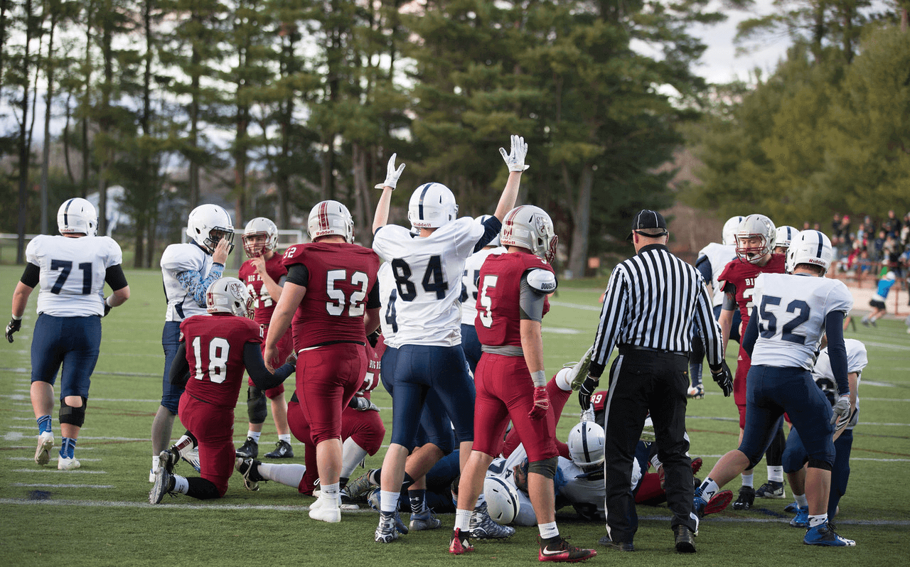
Courtesy of Phillips Academy.
The 2015 Andover team celebrates a touchdown. Andover beat Exeter 29-14 for the team's third consecutive victory.
The Football Tradition
Though each game counts equally towards the final score of A/E day (a tally of games won by both sides), the football game has historically been a stronghold of student interest and attendance.
“Every team is just as important at Andover… as the football team. [But the] soccer and field hockey games were done, so we packed our side at Andover for sure against Exeter,” said Brennen Keefe ’88, a Post-Graduate (PG) who played in the 1987 A/E game that Andover won 14-13.
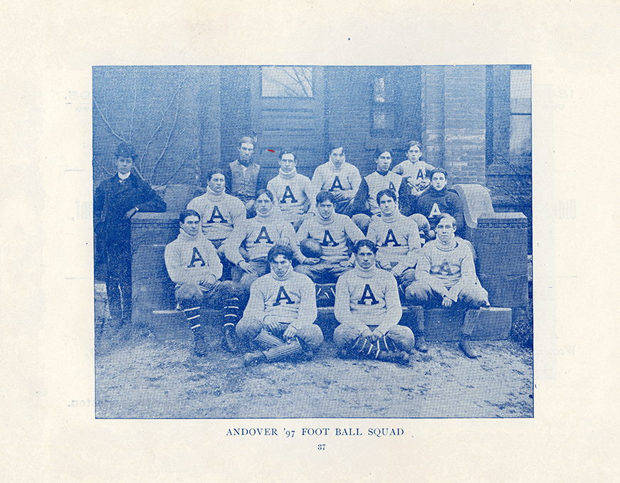
Courtesy of the Phillips Academy Archives.The 1898 Andover Football team. The team fell to Exeter 18-14.
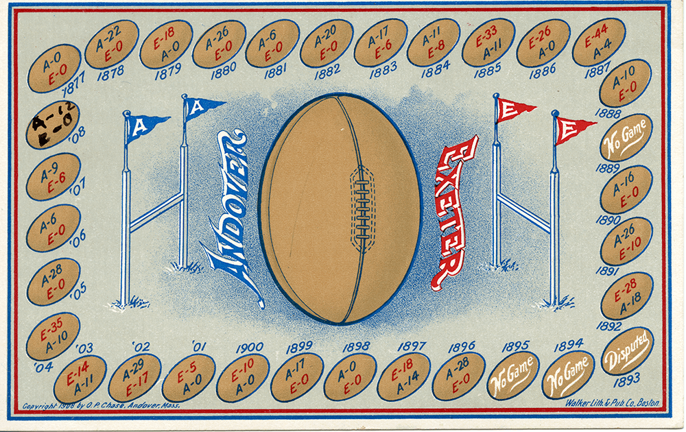
Courtesy of the Phillips Academy Archives.A 1908 poster shows the win tallies between the Andover and Exeter football teams.
“Andover… was a juggernaut… When I was there, you had a Varsity team and five JV football teams. So, practically everybody in the school… played football,” said Mike Bassett ’60.
Over the course of 136 contests, Andover’s football team has emerged victorious 72 times to Exeter’s 54. In addition, the schools have tied ten times. Yet no matter who wins or loses, the school spirit that accompanies each weekend of competition with Exeter is exciting in its own right.
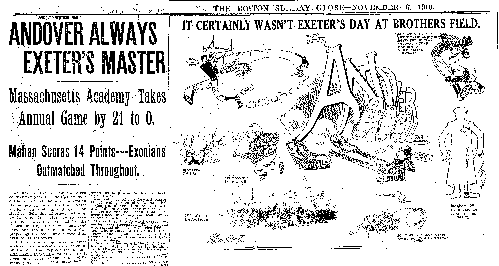
Courtesy of the Phillips Academy Archives.A cartoon in the Boston Globe details Andover's 1910 win over Exeter. Andover won by a score of 21-0.
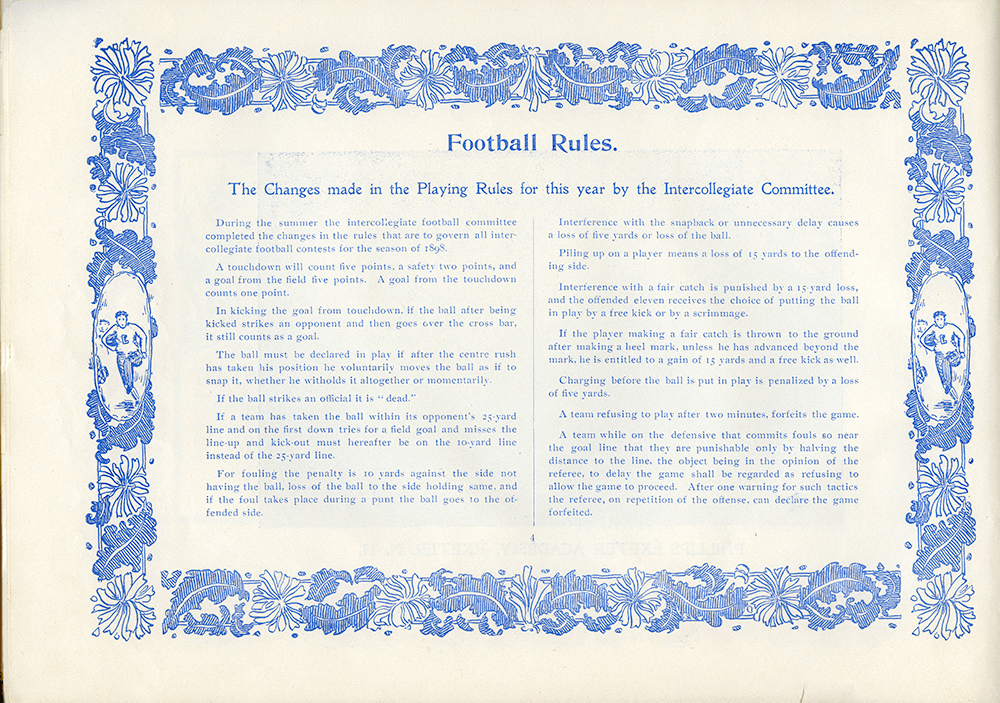
Courtesy of the Phillips Academy Archives.“Rules that are to govern all inter-collegiate football contests for the season of 1898.”
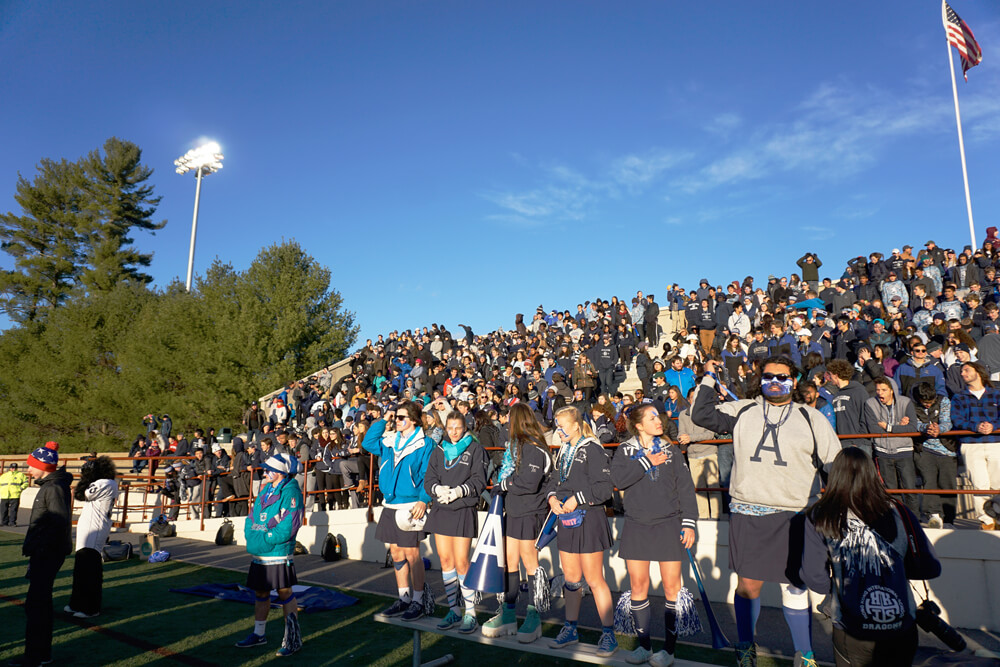
C.Elkouh/The Phillipian
Blue Key Heads from the Class of 2016 lead the Andover section in cheers at last year's A/E Weekend at Exeter.
Big Blue Spirit
“Andover/Exeter, to me, is a perfect time for the whole school to get together… I think my favorite part, other than when we win and can celebrate as a whole school, is when everyone is getting so hyped. Even though finals is the next week, every single year that I’ve been there, I’ve never even thought about it. I’m just having the time of my life, supporting PA and just being with all my friends,” said Blue Key Head Ben Andresen ’17, one of Andover’s ten spirit leaders.
The weekend festivities mean something different to each member of the community.
“Andover/Exeter is a big deal to me because it makes me feel like a part of something a lot bigger than just my team or just my sport. The whole history of it. It’s also a chance for me to share something that I’ve been a part of for a while now with the younger kids,” said Andover Boys Soccer Co-Captain Peter Heckendorn ’17.
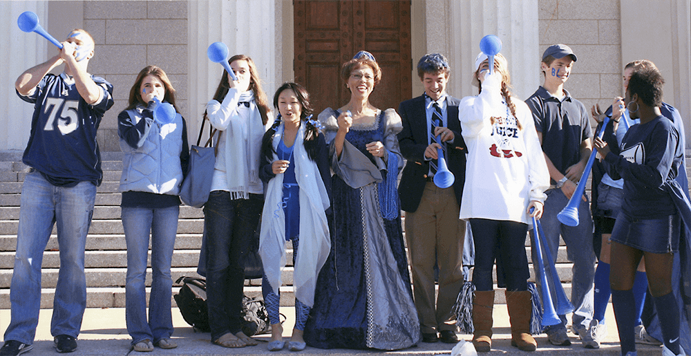
Courtesy of the Phillips Academy Archives.Becky Sykes poses with students on the steps of Samuel Phillips Hall during a 2006 Spirit Week.
Blue Key Heads organize an annual Spirit Week for the week leading up to A/E day. Each day of Spirit Week has a school-wide dress-up theme or “psyche.” This year’s themes were ‘Seasons,’ ‘Twin Day,’ ‘Superheros and Villians,’ ‘Exeter Geek Day,’ and ‘Big Blue Day.’
“When it’s ‘Big Blue Day’ and the entire campus seems to wear blue – even the teachers and staff members get into it – I think it’s awesome, as diverse as our community is, as many different viewpoints on as many different things we have around everything, kids who are into sports, kids who aren’t into sports, they still show up and support the school,” said Chris Capano, Director of Student Activities.
“Big Blue spirit allows me to be me in the most genuine form.”
Laura Bilal ’17
“We had a tremendous spirit; football was the big game on campus… the stands were full… the buildup to the Exeter game was full of spirit. I can remember speaking in front of the whole school on Sam Phillips steps telling jokes. The band was there – this was the night before the game – the crowd was there,” said George Bixby ’53.
The culmination of Spirit Week festivities is the Pep Rally. On the eve of A/E day each year, the student body congregates in Phelps Stadium to watch team dances and participate in cheers led by the Blue Key Heads. Prior to the construction of Phelps, the Pep Rally took place on the steps of Samuel Phillips Hall.
“We didn’t have pep rallies except before the Exeter game. And [the football team] used to gather on the steps of Sam Phil… All the way from across Main Street came the whole student body and the band. They’d coming marching up with the torch light and so on. And playing music and it was a rather exciting time,” said Bassett.
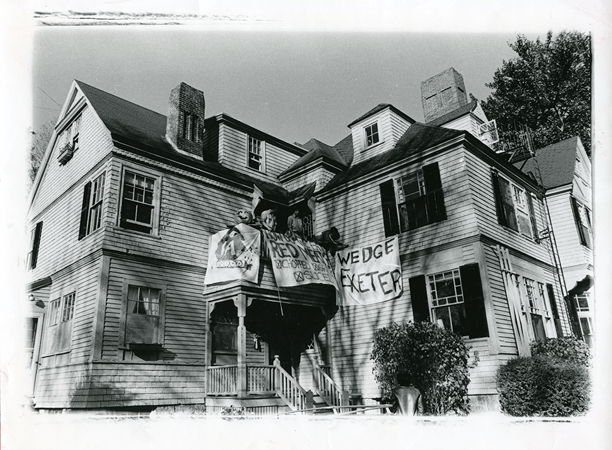
Courtesy of the Phillips Academy Archives.Students hang banners for Andover/Exeter Weekend in 1980.
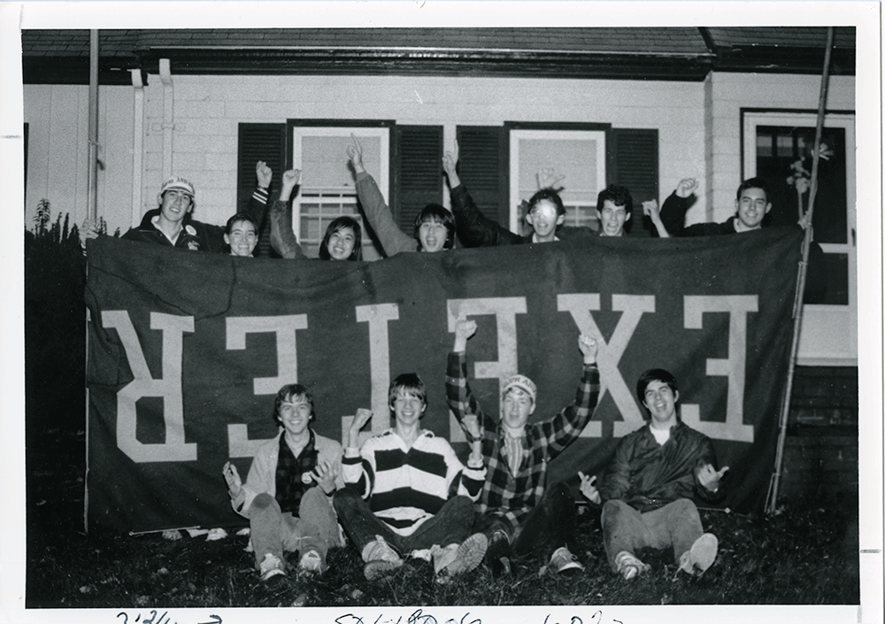
Courtesy of the Phillips Academy Archives.Andover students hang a seized Exeter banner upside down. Andover beat Exeter 14-6.
Students reflected that their view of A/E Weekend has changed over the course of their time at Andover.
“Now that I'm on the sidelines cheering on the players… the fact that many of them are now my friends for going on four years just makes me super emotional. I see A/E through a much more sentimental lens now,” said Blue Key Head Auguste White ’17.
“As a freshman, I was a lot more nervous about it. I didn’t really recognize how exciting it was. I was worried about doing well and not messing up in front of everyone. But now it’s definitely more about making the school proud, and making everyone who is watching proud of me,” said Heckendorn.
Confidence was a common thread that influenced students’ views. “As a freshman, I was kind of intimidated by Exeter. But having been here for three years, and beating them all three years, certainly has helped my confidence. And now I just know for sure that Andover is better than Exeter – it’s not really a question – so we’re just basically there to prove to them that we are better,” said Eliot Zaeder ’17, a Blue Key Head and member of Andover Boys Soccer.
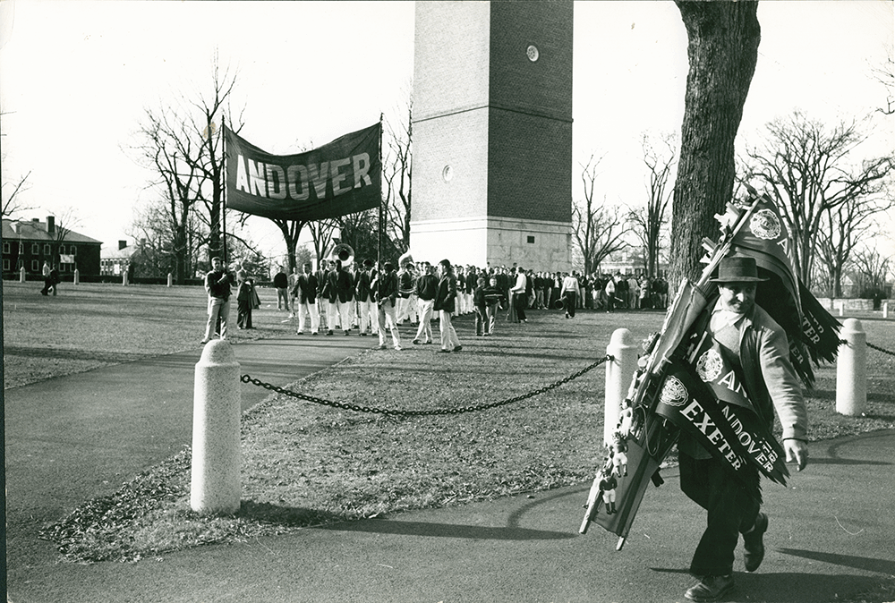
Courtesy of the Phillips Academy Archives.
A vendor sells Andover and Exeter banners, amongst other tchotchke as Andover boys get ready to parade in 1958.
Tough Losses
After a season of preparation and anticipation, nothing dampens the mood of A/E Weekend like a loss to Exeter.
“All I remember was it was bitterly cold and they were beating us so badly that near the end they let me get into the game as a quarterback, and my ankles were practically frozen. The ground was frozen. Your cleats couldn’t even get in there. It was really, besides losing so badly, a bitterly cold day,” said Bassett.
Though Andover now exclusively plays high school teams, such as Brooks, Salisbury, Deerfield, and Loomis Chaffee, that has not always been the case. Throughout the 1950s and 1960s, Andover played few games against other high schools. Instead, it faced a schedule laden with college freshman teams.
“The only prep-school team that we played was Exeter. We played Mass Maritime freshmen, Harvard freshmen, Wesleyan freshmen, Amherst freshmen, Springfield freshmen, and Tufts freshmen,” said Bixby.
Gil Bamford ’58, who captained Andover’s football team in 1957, said, “We played a lot of college freshman teams in those days. In fact, we basically played Exeter and I think that was it. My Senior year we played Exeter, Deerfield, and Hermon, but the rest of the games were against… the smaller colleges that had freshman teams in those days.”
Bassett, who played four years of football at Andover, said, “Before I got [to Andover]… in the late forties [and] until probably into the early fifties, they used to play the Ivy League Freshman Teams. They were very serious football in the Ivy Leagues. But then the Ivies got too big, so we played Williams and Amherst and Bowdoin and Northeastern and Tufts. And then Exeter, and then we gradually built in Mount Hermon and Deerfield before the Exeter game. Andover and Exeter didn’t play in any prep school league.”
Because the A/E game was one of the only times during the season that Andover athletes went head-to-head with their peers, the competition was amplified and the severity of a loss was multiplied.
Exeter toppled Andover 45-6 on a cold November day in 1956. Exeter’s head coach was in his final year at the helm of the Exeter football program and had built a team not only to win, but to dominate.
“Exeter’s coach was going to be retiring that year and so he brought in a major number of Post-Grads, PGs, and the most outstanding one was the quarterback,” said Bamford, a member of Andover’s 1956 team.
“That year, Exeter was really loaded. They had a lot of PGs because it was the year that their coach – it was going to be his final year before he retired. So they really loaded up and they had an outstanding group of ball players,” Bamford continued.
Andover was the clear underdog, and facing an Exeter team full of stars did not bode well after a particularly rough season.
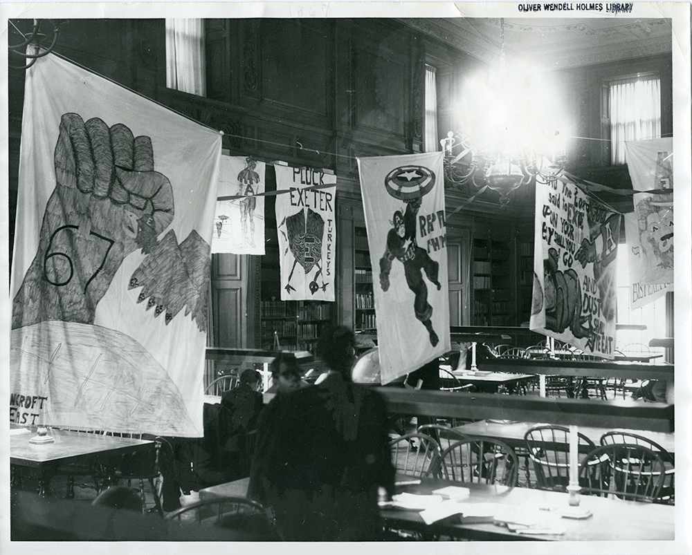
Courtesy of the Phillips Academy Archives.Banners hang in "silent study" (the Garver Room) in Oliver Wendell Holmes Library.
“We had a poor season leading up to the Exeter game. But that was a big event, not just the Andover/Exeter game, but that was my first year at Andover. And that game was so bitterly cold, the other three games were much more pleasant weather. Oh god, was it cold. All I remember. I don’t think I played a game that was that cold ever. Anywhere, in college, or anywhere,” said Bassett. He and Bamford overlapped at Andover for two years in the 1950s.
In such a tense rivalry, a loss like the one Andover sustained in 1956 is devastating. But the cold – and the loss – did not linger for long.
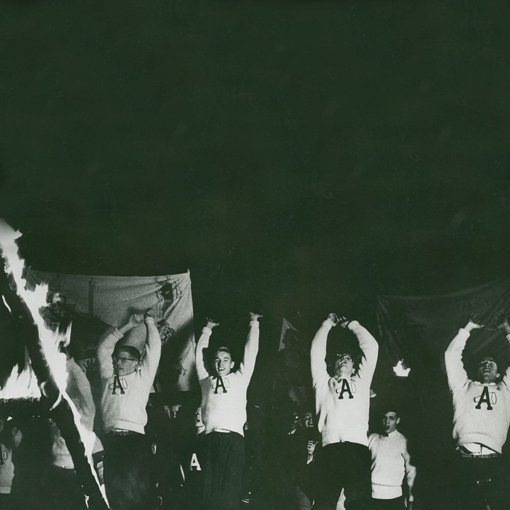
Courtesy of the Phillips Academy Archives.
1958 Andover students cheer at a rally for Andover/Exeter Weekend.
Great Wins
Andover avenged its dreadful 1956 loss with a 45-6 win the following year.
“The following year, we played up there at Exeter, and we beat them. I was playing halfback, and we had quite a team. We had our own boys, we brought in a couple of PGs. That was a bright sunny day, it wasn’t bitterly cold, up in Exeter,” said Bassett.
“Well, it turned out, we did so well we matched the score that they had beaten us by the year before. In fact, by the time we were looking at it, we made the last touchdown and I remember we were in the a huddle and a couple of guys said, ‘You know, if we don’t give Exeter a point, we will have the same score and it will be reversed,’ ” he continued, who captained the 1957 team.
“Beating Exeter was everything.”
Garth Williams ’97
Even though the 1957 team had a strong season, the win against Exeter was all it needed to call the year a success. The A/E game has the power to both validate and call into question a season’s performance. Athletes from all eras acknowledge the importance of a strong showing on A/E day.
Keefe, after playing one year at Andover, said, “There was definitely a sense that you could not win any games throughout the year, but if you won the Exeter game, that was a successful season. Of course you wanted to win all of your games, but that one win could kind of make up for having an average season.”
Garth Williams ’97 played football for four years at Andover, and captained the Varsity team his Senior year. He remarked that pre-game speeches and pep talks were not needed on A/E day, as the team was already intensely concentrated on the game.
“I don’t think the importance of the game was lost on anybody. It’s one of those games that the whole week leading into it has a different level of focus and intensity throughout the practice week. The whole campus is feeling it, there’s an electricity,” said Williams.
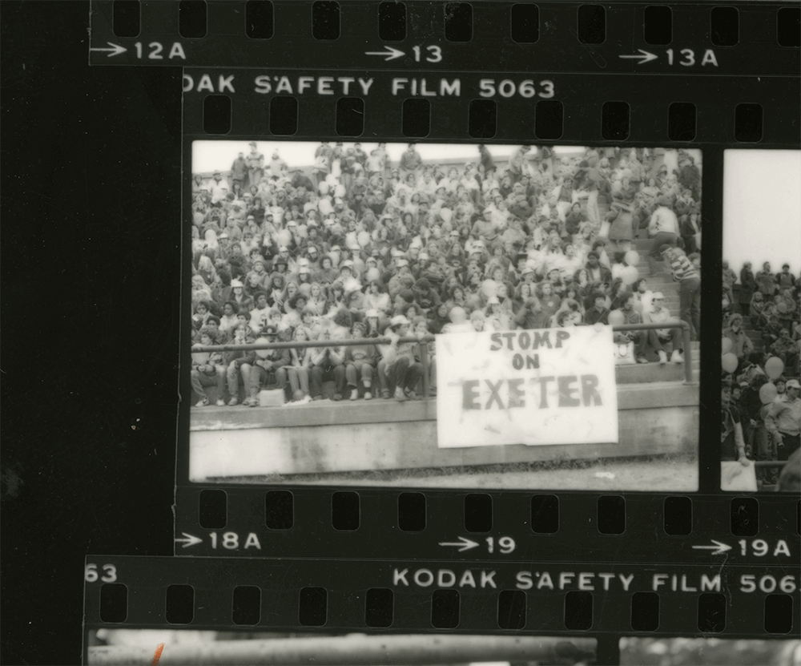
Courtesy of Phillips Academy Archives.Photos from Tim Plass depict the Andover section at the 1980 Andover/Exeter Weekend.